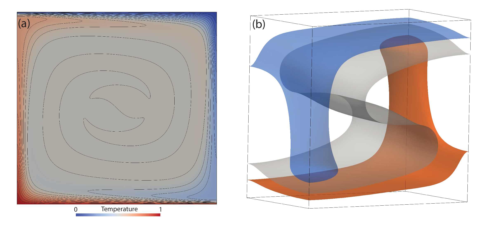

1.2. Convection in a Box - isoviscous (Busse 2D)
Here we highlight the ease at which things can be tried in different geometries. We first examine and validate our setup in a
3-D Cartesian domain, for a steady state case with both constant viscosity -- case 1a from Busse el al. (1994).
The domain is a box of dimensions \(1.0079 \times 0.6283 \times 1\). Boundary conditions for temperature are T = 0 at the surface (z = 1) and
T = 1 at the base (z = 0), with insulating (homogeneous Neumann) sidewalls. No‐slip velocity boundary conditions are specified
at the top surface and base of the domain, with free‐slip and no‐normal flow boundary conditions on all sidewalls. Initial
conditions are chosen to produce a single ascending and descending flow, at \(x = y = 0\) and \((x = a)\), \((y = b)\), respectively.
The Rayleigh number \(= 3 \times 10^{4}\).
For this benchmark, we compute the Nusselt number and RMS velocity at a range of different mesh resolutions, with results presented in Fig. 2.
Video 1 is the visualisation of this time-dependent problem.

Figure 2) Results from 3‐D isoviscous benchmark cases
Busse el al. (1994): (a) Nusselt number versus number of
pressure and velocity DOF, at \(Ra = 3 \times 10^4\) (Case 1a - Busse el al. (1994),
for a series of uniform, structured meshes; (b) RMS velocity versus number of pressure and velocity DOF. Benchmark values
denoted by dashed red lines.

Figure 3)
Video 2) Visualisation of the time-dependent problem in example 1.2.
